Visualizing Tabular Data
MIDS W209: Information Visualization
John Alexis Guerra Gómez | john.guerra[at]gmail.com | @duto_guerra
https://johnguerra.co/lectures/MIDS_W209_Information_Visualization/06_Tabular/
https://johnguerra.co/lectures/MIDS_W209_Information_Visualization/06_Tabular/

Partially based on slides from Tamara Munzner
What We Are Going to Learn
- Arranging tables
- Zero keys
- Scatterplots
- Some keys
- Barcharts
- Heatmaps
- Other axis orientations
- Sploms
- Parallel coordinates
- Navio
- Radial representations
- Pie charts
- Radar plots
Recap What/Why/How
Arranging Tables
Why Arrange?
Space is the most important channel.
How to arrange
- Quantitative data
👉 Express - Categorical data
👉 Separate, order, align
Arrange Tables
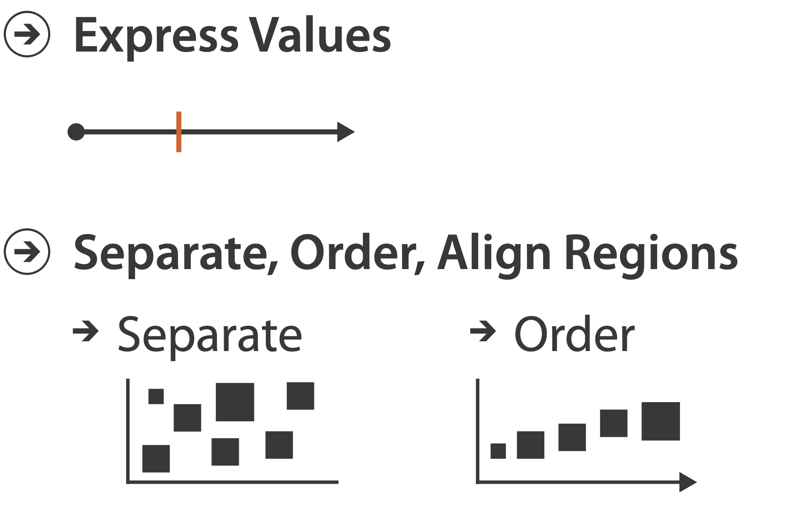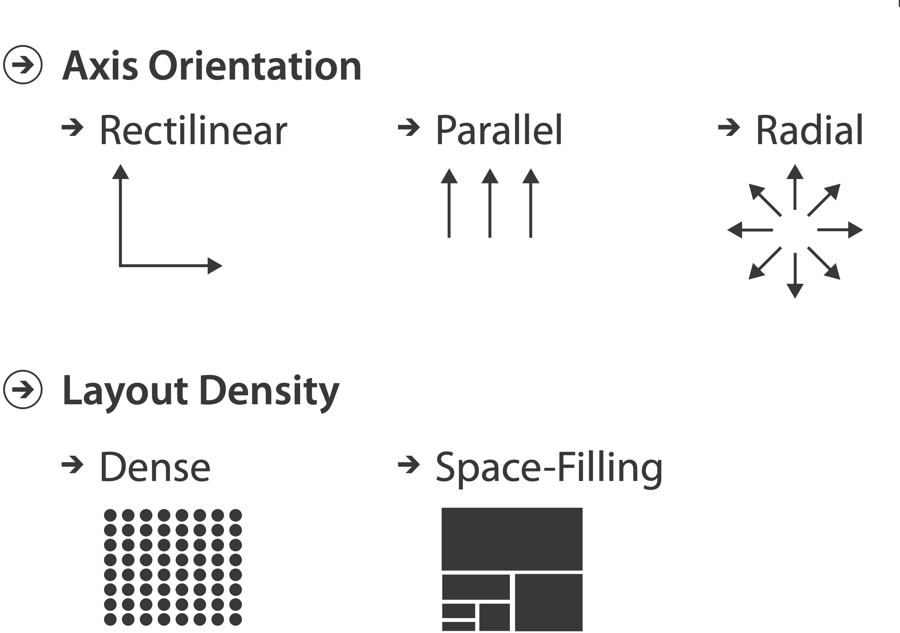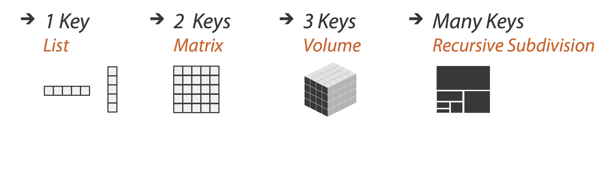
Keys
- Independent attribute
- Used as unique index to look up items
- Simple tables: one key
- Multidimensional tables: multiple keys
Values
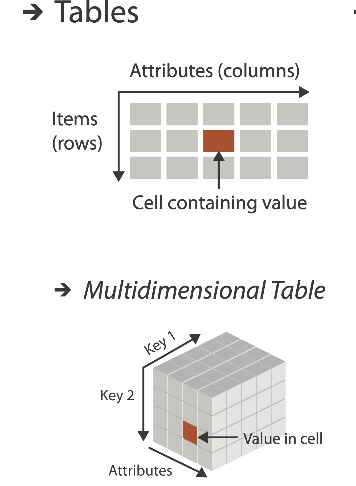
- Dependent attribute, value of cell
- Classify arrangements by key count
- Zero, one, two, many...
Zero Keys
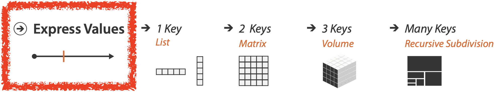Idiom: Scatterplot
- Express values
- Quantitative attributes
- No keys, only values
- Data: two quantitative attributes
- Mark: points
- Channels: horizontal and vertical position
- Tasks: identify trends, outliers, distribution, correlation, clusters
- Scalability: hundreds of items
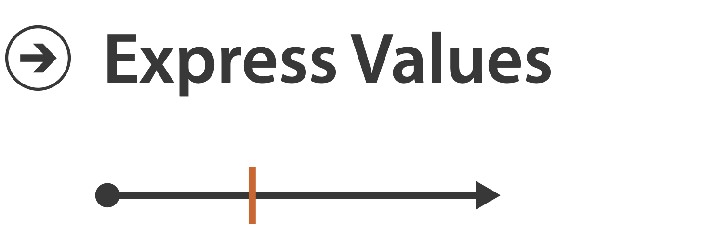
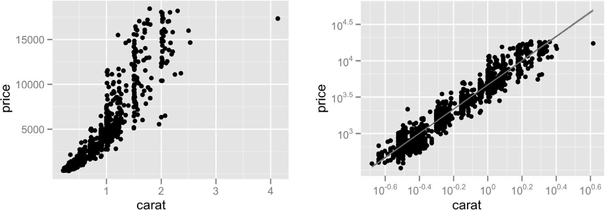
[A layered grammar of graphics. Wickham. Journ. Computational and Graphical Statistics 19:1 (2010), 3–28.]
Scatterplot Overplotting
Some Keys
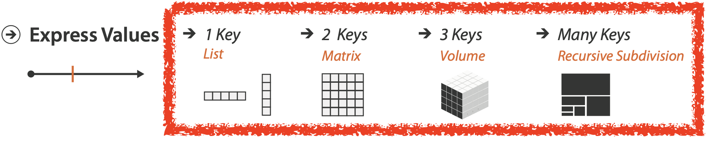Some Keys: Categorical Regions
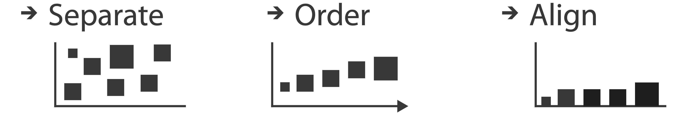- Regions: contiguous bounded areas distinct from each other
- Using space to separate (proximity)
- Following expressiveness principle for categorical attributes
- Use ordered attribute to order and align regions
Idiom: Barchart
- One key, one value
- Data:
- One categorical attribute, one quantitative attribute
- Mark: lines
- Channels:
- Length to express quantitative value
- Spatial regions: one per mark
- Separated horizontally, aligned vertically
- Ordered by quantitative attribute
- By label (alphabetical), by length attribute (data-driven)
- Task:
- Compare, lookup values
- Scalability
- Dozens to hundreds of levels for key attribute
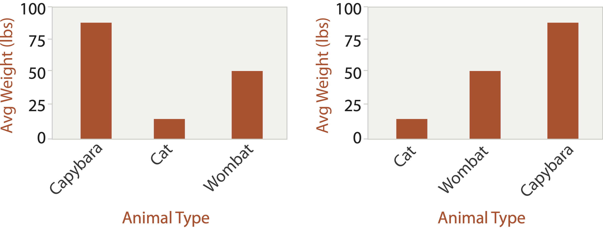
Separate, Order, and Align
- Separate: helps differentiating
- Order: helps locating/lookup
- Align: helps comparing
Idiom: Stacked Bar Chart
- Two keys, one value
- Data:
- Two categorical attributes
- One quantitative attribute
- Mark: vertical stack of line marks
- Glyph: composite object, internal structure from multiple marks
- Channels: length and color hue
- Spatial regions: one per glyph
- Aligned: full glyph, lowest bar component
- Unaligned: other bar components
- Task: part-to-whole relationship
- Scalability: few bars, few stacked
Grouped Bar Chart
Stacked to Grouped
https://observablehq.com/@d3/stacked-to-grouped-barsIdiom: Dot Plot
"Stacked Bar Charts Are the Worst."
Interesting discussion from Robert Kosara's blog.
Make sure to read the comments.
Idiom: Marimekko Chart
https://datavizcatalogue.com/methods/marimekko_chart.html
Chart Axes
- Labeled axis is critical
- Avoid cropping y-axis
- Include 0 at bottom left
- Or slope misleads
Two Keys
Idiom: Heatmap
- Two keys, one value
- Data
- Two categorical attributes (gene, experimental condition)
- One quantitative attribute (expression levels)
- Marks: area
- Separate and align in 2D matrix
- Indexed by two categorical attributes
- Channels
- Color by quantitative attrib
- (Ordered diverging colormap)
- Task: find clusters, outliers
- Scalability
- One million items, hundreds of categorical levels, about ten quantitative attribute levels
Idiom: Cluster Heatmap
- In addition
- Derived data
- Two cluster hierarchies
- Dendrogram
- Parent-child relationships in tree with connection line marks
- Leaves aligned so interior branch heights easy to compare
- Heatmap
- Marks (re-)ordered by cluster hierarchy traversal
- Task: assess quality of clusters found by automatic methods
Axis Orientation
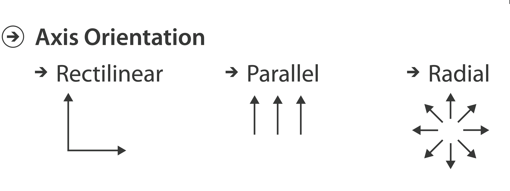Idiom: Scatterplot Matrix
- Rectilinear axes, point mark
- All possible pairs of axes
- Scalability
- One dozen attributes
- Dozens to hundreds of items
- Task:
- Summarize/explore
Idiom: Parallel Coordinates
- Parallel axes, jagged line representing item
- Rectilinear axes, item as point
- Axis ordering is major challenge
- Scalability
- Dozens of attributes
- Hundreds of items
- Task:
- Summarize/explore
Task Correlation
- Scatterplot matrix
- Positive correlation
- Diagonal low-to-high
- Negative correlation
- Diagonal high-to-low
- Uncorrelated: spread out
- Parallel coordinates
- Positive correlation
- Parallel line segments
- Negative correlation
- All segments cross at halfway point
- Uncorrelated
- Scattered crossings
[Hyperdimensional Data Analysis Using Parallel Coordinates. Wegman. Journ. American Statistical Association 85:411 (1990), 664–675.]
[A layered grammar of graphics. Wickham. Journ. Computational and Graphical Statistics 19:1 (2010), 3–28.]
Orientation Limitations
- Rectilinear: scalability with regard to #axes
- Two axes best
- Three problematic
- Four or more impossible
- Parallel: unfamiliarity, training time
Navio
https://navio.devBonus: InMens
What about millions of points?
http://vis.stanford.edu/projects/immens/demo/splom/Radial Orientations
Idioms: Radial Bar Chart, Star Plot
- Radial bar chart
- Radial axes, meet at central ring, line mark
- Star plot
- Radial axes, meet at central point, line mark
- Bar chart
- Rectilinear axes, aligned vertically
- Accuracy
- Length unaligned with radial
- Less accurate than aligned with rectilinear
Idiom: Radar Plots
- Task: comparison
- Scalability: similar to parallel coordinates
- Order of attributes matter
“Radar Graphs: Avoid them (99.9% of the time).”
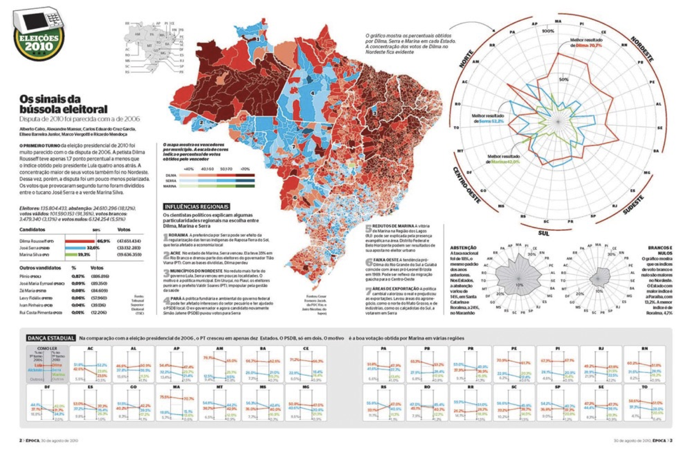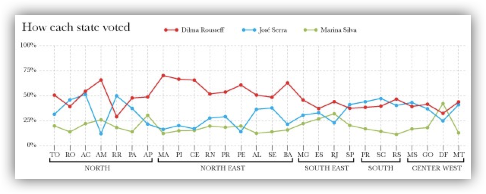
[Slide courtesy of Ben Jones]
Idioms: Pie Chart, Polar Area Chart
- Pie chart:
- Area marks with angle channel
- Accuracy: angle/area much less accurate than line length
- Polar area chart:
- Area marks with length channel
- More direct analog to bar charts
- Data:
- One categorical key attribute, 1 quantitative value attribute
- Task:
- Part-to-whole judgements
Pie Chart Perception
- Some empirical evidence that people respond to arc length
- Not angles
- Maybe also areas...?
- Donut charts no worse than pie charts
Pie chart Perception (cont.)
- Meta-points
- Redesign of paper figures in later blog post
- Violin plots good for analysis but too detailed for presentation
- Tamara's advice: still dubious for pie/donut charts
- Sometimes okay if just two attributes
Idioms: Normalized Stacked Bar Chart
- Task:
- Part-to-whole judgments
- Normalized stacked bar chart
- Stacked bar chart, normalized to full vertical height
- Single stacked bar equivalent to full pie
- High information density: requires narrow rectangle
- Pie chart
- Information density: requires large circle
Idiom: Glyphmaps
- Rectilinear good for linear vs. nonlinear trends
- Radial good for cyclic patterns
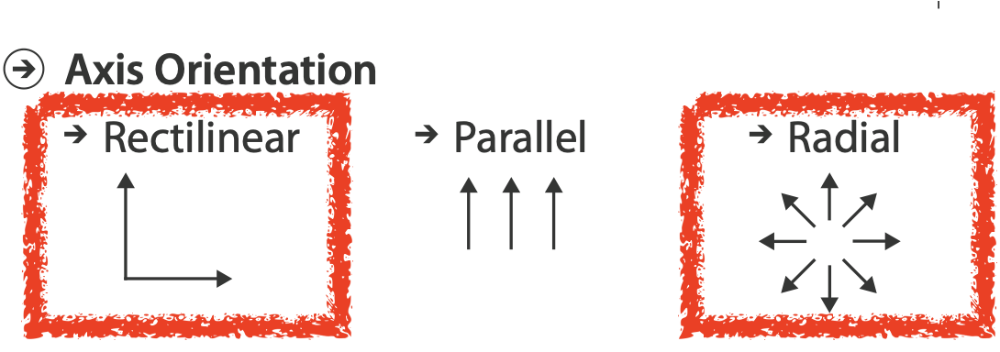
Film Flowers
Film Flowers by Shirley Wu https://sxywu.com/filmflowers/Radial Orientation
- Perceptual limits
- Polar coordinate asymmetry
- Angles lower precision than lengths
- Frequently problematic
- Sometimes can be deliberately exploited!
- For two attributes of very unequal importance

Idiom: Dense Software Overviews
- Data: text
- Text and one quantitative attribute per line
- Derived data:
- One pixel high line
- Length according to original
- Color line by attribute
- Scalability
Tables with D3
Idiom: Scatterplot
https://observablehq.com/@john-guerra/scatterplotBarchart
http://blockbuilder.org/mbostock/3885304Stacked Barchart
http://blockbuilder.org/mbostock/3886208d3.Stack and d3.Nest
https://observablehq.com/@john-guerra/d3-stack-with-d3-nestd3 Stack
https://github.com/d3/d3-shape/blob/v1.3.5/README.md#stack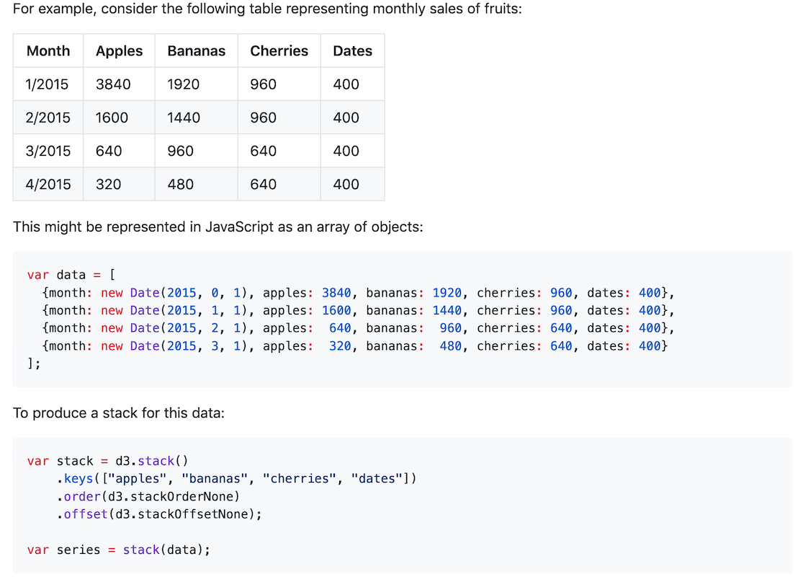Heatmap
http://blockbuilder.org/ianyfchang/8119685Scatterplot Matrix
http://blockbuilder.org/mbostock/4063663Parallel Coordinates
http://blockbuilder.org/syntagmatic/3150059Polar Area Chart
http://blockbuilder.org/curran/94f1376b946c9d217014Pie chart
http://blockbuilder.org/mbostock/3887235Donut chart
http://blockbuilder.org/mbostock/1346410Stacked bar chart normalized
http://blockbuilder.org/mbostock/3886394What We Learned
- Arranging tables
- Zero keys
- Scatterplots
- Some keys
- Barcharts
- Heatmaps
- Other axis orientations
- Sploms
- Parallel coordinates
- Navio
- Radial representations
- Pie charts
- Radar plots